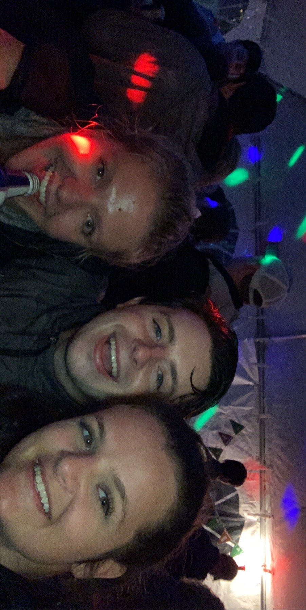

About Ryan
 Ryan Standridge is recent graduate of Clemson University where he earned a Masters
of Science in Data Science and Analytics. While working hard in this program,
he has completed some of his first Data Science/Analytics projects, allowing him to
expand his knowledge in the Data Science field.
Before studying at Clemson, he attended a small school in Clinton, South Carolina called
Presbyterian College, where he majored in Applied Mathematics with minors in Business Administration and Physics. While attending PC,
he spent four years playing on the Mens Soccer team while also being involved in Greek Life
as well as associations like the Math Honors Society, Honor Council, and Residence Life.
Also, while studying at Presbyterian College, he was able to travel to England, where he
completed a study abroad program in May of 2019.
Ryan loves to travel, which has led him to many different states and countries, and when he is not traveling, he loves to play sports like
golf and soccer, spend time with his friends and family, and continually learn about Data Science.